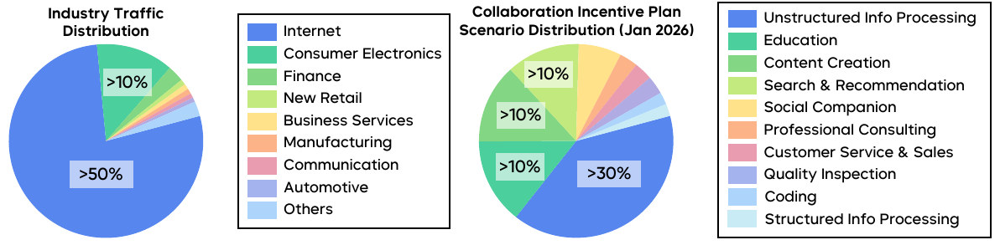
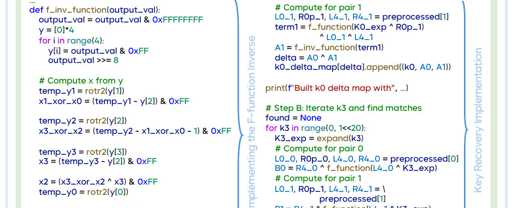

速览
五条要点
先看流量，再定优化目标
以中国大陆 MaaS 流量（互联网行业 >50%图 1 · 读图，非结构化信息处理 >30%图 1 · 读图）和 agentic coding 轨迹（前端、Bug 修复占主导；Vue 采用率超 React 3 倍§2.2）决定能力优先级。
价格约低一个数量级
Pro 输出 $2.37 / 1M，对比 Claude-Opus-4.5 $25、GPT-5.2 High $14表 1，约为前者的 1/10.5推算；Mini 输出 $0.31表 1。
视觉 / 视频是最强项
Pro 在 MathVision 88.8、BabyVision 60.6、DA-2K 92.3、OmniDocBench 1.5 NED 0.099表 8，VideoMME 89.5、VideoReasonBench 77.8（人类 73.8）表 9，搜索与视觉 agent 也领先（MM-BrowseComp 48.8 vs GPT-5.2 26.3）表 11。
推理与形式化证明
IMO 2025 35/42、CMO 2025 114/126，均达金牌线表 2；Codeforces 3020表 3；Putnam-200 Pass@8 35.5%，高于自家专用 Seed-1.5-Prover 的 26.5表 5。
自认短板：编码与长尾知识
原文自承在编码上与 Claude 差距明显（SWE-Evo 8.5 vs Opus 27.1；NL2Repo-Bench 27.9 vs GPT-5.2 49.3）表 11 · 表 13，长尾知识落后 Gemini（SimpleQA Verified 36.0 vs 72.1）表 3 · §1；长文本事实性 FactScore 71.2，明显低于其他四家（90.6–92.6）表 3。
架构与产品分档
模型卡没有架构图，也没有任何结构描述（层数、MoE 与否、视觉编码器、上下文长度均未提及）。能核对的只有三档定位、价格与已评测的能力面。
Seed2.0 Pro 旗舰
$0.47 / $2.37 表 1
面向复杂推理与长上下文、能力优先的任务。§2.3
Seed2.0 Lite 均衡
$0.09 / $0.53 表 1
通用应用的均衡选择；agent 评测里在小模型组“稳居第一或第二”。§2.3 · §4.4
Seed2.0 Mini 高吞吐
$0.03 / $0.31 表 1
高吞吐、延迟敏感、单次成本必须极低的场景；agent 类基准未评测 Mini。§2.3 · §4.4
价格为 USD / 1M token（输入 / 输出）。原文注明：Seed2.0 采用区间定价，表中为“代表性单价”。表 1
相对 Seed1.8 的变化（原文给出的部分）可核对
- 复杂指令（中文内测）：总分 72.89 → 75.26（+2.37）表 7
- HiPhO +15.8、MMMU-Pro +5.0§4.2
- VideoCut 工具：全系默认具备，用于长视频推理§4.3
- 视频：VideoReasonBench 52.8 → 77.8表 9
没写的未披露
- 总参数 / 激活参数 / 是否 MoE
- 视觉编码器、视频帧采样、上下文窗口
- Pro / Lite / Mini 是否同源、是否蒸馏
- 推理延迟的实测数字（只说三档可权衡）
数据：训练侧几乎空白，部署与评测数据写得最细
训练语料来源、规模、清洗、合成、caption、配比在原文中都没有出现。原文写得具体的是两类“数据”：① 指导优化方向的部署/使用数据；② 自建评测集的构造与清洗。下面分开写。
4.1 训练数据：已披露 vs 未披露
| 项目 | 原文说法 | 出处 |
|---|---|---|
| 预训练语料来源 / token 数 | 原文未披露 | — |
| 数据配比（文本/代码/图像/视频） | 原文未披露（故本页不画比例条） | — |
| 清洗、去重、质量过滤 | 原文未披露 | — |
| 合成数据 | 原文未披露 | — |
| 图像/视频 caption 与标注方式 | 原文未披露 | — |
| SFT / RL 数据 | 原文未披露 | — |
| 长尾领域知识 | “通过系统性吸收长尾领域知识”应对专业场景；无规模、无方法 | §1 |
| 代码方向侧重 | “持续投入深度推理和以代码为中心的训练”；无细节 | §4.1 |
4.2 部署数据：用来决定“练什么”

行业 / 场景分布 §2.1
- 数据来源：“豆包协作激励计划”，伙伴与开发者授权使用真实调用数据§2.1 · 图 1
- 互联网行业“压倒性”占比；制造、汽车、通信各低于 1%§2.1，原文推测与前代 Seed 能力不足有关
- 主导场景的技术要求：长上下文、异构知识整合、多步指令执行、结构化高保真输出§2.1
Agentic coding 查询分布 §2.2 · 图 2
- 基于轨迹级开发者使用数据§2.2
- 按开发领域：前端远超后端 / 客户端 / 全栈；按需求：Bug 修复最多，其次重构与文档§2.2
- JS / TS / CSS / HTML 合计占被修改代码的多数；Vue 采用率超过 React 3 倍§2.2
- 图 2 纵轴为 0–50%，原文未给各类具体百分比图 2 · 读图
由此得到的优化取向 §4.1
面向豆包等用户产品：优先指令遵循鲁棒性、长尾知识覆盖、长上下文稳定性；面向 Trae 等编程产品：优先代码推理与前端生成质量。§4.1 原文没有说明这些取向如何落到具体数据或训练改动上。
4.3 自建评测数据：怎么造、怎么洗
Agentic 基准剔除的 6 类用例 + Terminal-Bench 2.0 排除项§3.3
- 多容器 Docker Compose 场景（引入不必要复杂度）
- 参考解自身通不过校验的用例
- 多次运行结果不确定的用例
- 磁盘占用异常的任务
- 依赖网络、结果不一致的题
- 需要长时间下载或复杂验证、损害可复现性的场景
Terminal-Bench 2.0 另排除 3 题：extract-moves-from-video、mailman、install-windows-3.11（网络限制与安全考虑），其余适配到内部 agent 框架。§3.3
4.4 已披露的规模（评测侧）
| 对象 | 规模 | 出处 |
|---|---|---|
| 公开图像基准 | 50 个，分 9 类（数学、STEM、视觉谜题、感知识别、通用 VQA、指点计数、2D/3D 空间、文档图表、长上下文） | §3.2 |
| 公开视频基准 | 24 个，分 6 维（知识、推理、感知与运动、长视频、多视频、流式） | §3.2 |
| 中文复杂指令内测 | 912 条用例 / 17 个加权维度 | §4.1 |
| Putnam-200 | 从 PutnamBench 随机抽 200 题 | §4.1 · 附录 E.2 |
| ICPC | 2025 年 5 场官方赛（世界总决赛 + 西安/成都/武汉/上海区域赛），官方用例与时空限制 | §5.1.5 |
| 自动诊断管线 | 每模型用例数：XBench 100、WorldTravel 150、IMO-Bench 400、τ²-Bench 278；均 9 个模型 | 表 15 |
| 视频帧率设定 | Morse-500 用 5 FPS，运动类基准用 2 FPS，对比模型同设定 | §3.2 |
训练配方：原文未披露
预训练阶段、上下文扩展、SFT、RL、奖励模型、超参，原文一项都没写。能写的只有评测/推理时的流程，下面明确标为“推理时设定”，不是训练配方。
原文没写的训练信息 未披露
预训练分几阶段与各阶段 token 数 · 优化器与学习率 · 上下文长度扩展 · SFT 数据规模 · RL 算法与奖励设计 · 视觉 / 视频对齐方式 · 三档模型的训练关系。本页不填任何数字。
推理时设定（评测用，非训练）
solve → verify → refine
- Pro 生成候选解，自行找出逻辑漏洞后修订，以满足奥赛评分标准附录 E.1
- 得到 IMO 2025 35/42、CMO 2025 114/126表 2
多轮 agent + Lean / Python / Lean 搜索
- Putnam-200，报告 Pass@8表 5
- 原文认为通用模型的自然语言数学推理可迁移到形式化证明附录 E.2
VideoCut · Thinking with Tracking
- VideoCut：对相关片段以更高 FPS 回放，全系默认具备§4.3
- Thinking with Tracking：提示模型在推理中逐帧输出运动目标的 bbox，再按轨迹判断运动类型；对 Gemini 和 Seed 都有效§4.3
另：ICPC 评测只给题面和“用 C++ 作答”的简单指令，不用多轮交互和外部工具，报告 Pass@8。§5.1.5
评测
四层：基础语言 → 视觉 / 视频 → 基础 agent → “经济与科研价值任务”（科学发现、Vibe Coding、上下文学习、真实任务）。大模型组对比 GPT-5.2 High / Claude-Sonnet-4.5 / Claude-Opus-4.5 / Gemini-3-Pro High；小模型组对比 GPT-5-mini High / Gemini-3-Flash High。§3
* Gemini 为按上下文档位（Flash 另按输入模态）的价格区间，浅色段为区间上沿；Seed2.0 为区间定价中的代表价。表 1 注
6.1 Pro vs 前沿大模型（精选）
| 基准 | GPT-5.2 High | Claude-Sonnet-4.5 | Claude-Opus-4.5 | Gemini-3-Pro High | Seed2.0 Pro | 出处 |
|---|---|---|---|---|---|---|
| 知识 / 科学 | ||||||
| MMLU-Pro | 85.9 | 88.0 | 89.3 | 90.1 | 87.0 | 表 3 |
| HLE (no tool, text only) | 29.9 | 14.5 | 23.7 | 33.3 | 32.4 | 表 3 |
| SimpleQA Verified | 36.8 | 29.3 | 48.6 | 72.1 | 36.0 | 表 3 |
| HealthBench | 63.3 | 28.7 | 36.3 | 37.9 | 57.7 | 表 3 |
| SuperGPQA | 67.9 | 65.5 | 70.6 | 73.8 | 68.7 | 表 3 |
| Encyclo-K | 61.0 | 58.0 | 63.3 | 64.9 | 65.7 | 表 3 |
| 数学 / 代码 / 推理 | ||||||
| AIME 2025 | 99.0 | 87.0 | 91.3 | 95.0 | 98.3 | 表 3 |
| IMOAnswerBench (no tool) | 86.6 | 60.7 | 72.6 | 83.3 | 89.3 | 表 3 |
| MathArenaApex (shortlist) | 80.1 | 26.0 | 47.4 | 71.4 | 82.1 | 表 3 |
| Codeforces (no tool) | 3148 | 1485 | 1701 | 2726 | 3020 | 表 3 |
| LiveCodeBench (v6) | 87.7 | 64.0 | 84.8 | 90.7 | 87.8 | 表 3 |
| GPQA Diamond | 92.4 | 84.3 | 86.9 | 91.9 | 88.9 | 表 3 |
| ARC-AGI-2 | 57.5 | 13.6 | 29.1 | 31.1 | 37.5 | 表 3 |
| 长上下文 / 指令 / 幻觉 | ||||||
| MRCR v2 (8-needle) | 89.4 | 47.1 | 56.2 | 79.7 | 54.0 | 表 3 |
| Frames | 84.0 | 78.7 | 84.7 | 81.9 | 84.5 | 表 3 |
| MultiChallenge | 59.5 | 57.3 | 59.0 | 68.7 | 68.3 | 表 3 |
| Inverse IFEval | 72.3 | 69.3 | 72.4 | 79.6 | 78.9 | 表 3 |
| FactScore | 91.9 | 90.6 | 91.1 | 92.6 | 71.2 | 表 3 |
| Agent：编码 / 搜索 / 工具 / 视觉 | ||||||
| Terminal Bench 2.01 | 62.4 | 45.2 | 60.2 | 56.9 | 55.8 | 表 11 |
| SWE Bench Verified | 80.0 | 77.2 | 80.9 | 76.2 | 76.5 | 表 11 |
| SWE-Bench Pro | 55.6 | 48.4 | 55.4 | 49.7 | 46.9 | 表 11 |
| SWE-Evo | 12.5 | 16.7 | 27.1 | 8.9 | 8.5 | 表 11 |
| SpreadsheetBench Verified | 69.9 | 75.9 | 78.6 | 70.8 | 79.1 | 表 11 |
| BrowseComp | 77.9 (65.3) | 43.9 (29.5) | 67.8 (57.2) | 59.2 | 77.3 | 表 11 |
| BrowseComp-zh | 76.1 | 42.4 | 62.4 | 66.8 | 82.4 | 表 11 |
| HLE-Verified | 68.5 | 37.6 | 56.6 | 67.5 | 73.6 | 表 11 |
| DeepSearchQA | 71.3 (66.4) | 36.3 | 76.1 (41.6) | 63.9 | 77.4 | 表 11 |
| τ²-Bench (retail) | 82 | 86.2 | 88.9 | 85.3 | 90.4 | 表 11 |
| MCP-Mark | 57.5 | 32.1 | 42.3 | 53.9 | 54.7 | 表 11 |
| ResearchRubrics | 42.3 | 38.6 | 45.0 | 37.7 | 50.7 | 表 11 |
| Minedojo-Verified | 18.3 | - | - | 23.3 | 49.0 | 表 11 |
| MM-BrowseComp | 26.3 | - | - | 25.0 | 48.8 | 表 11 |
| 经济 / 科研价值任务 | ||||||
| AInstein Bench | 41.3 | 33.7 | 44.0 | 42.8 | 47.7 | 表 13 |
| NL2Repo-Bench | 49.3 | 39.9 | 43.2 | 34.2 | 27.9 | 表 13 |
| DeR2 Bench | 69.0 | 58.9 | 60.4 | 66.1 | 58.2 | 表 13 |
| CL-Bench | 23.9 | 18.1 | 22.6 | 15.6 | 21.5 | 表 13 |
| XPert Bench | 53.3 | 44.7 | 50.5 | 53.1 | 64.5 | 表 13 |
| GDPVal-Diamond | 26.9 | 15.2 | 20.7 | 19.4 | 21.3 | 表 13 |
| ToB-Information Extraction | 44.7 | 48.3 | 50.1 | 49.0 | 52.0 | 表 13 |
1 原表脚注 “Using Terminus2”。括号内为“对齐设定”下的分数：原文称部分分数与其他机构技术报告差异很大表 11 注。对手的 agent 分数取“官方报告值与 Seed 自测值中的较高者”§3.3。“-” 为原表未给。
6.2 视觉理解（表 8 精选）
| 基准 | Claude-Opus-4.5 | GPT-5.2 High | Gemini-3-Pro High | Seed1.8 | Seed2.0 Lite | Seed2.0 Pro |
|---|---|---|---|---|---|---|
| MathVision | 74.3 | 86.8 | 86.1 | 81.3 | 86.4 | 88.8 |
| EMMA | 60.4 | 69.4 | 66.5 | 60.9 | 65.5 | 72.0 |
| HiPhO | 81.8 | 77.7 | 79.1 | 58.3 | 72.5 | 74.1 |
| VPCT | 29.0 | 56.0 | 90.0 | 61.0 | 73.0 | 76.0 |
| ArcAGI2-Image | 26.1 | 54.4 | 21.5 | 1.3 | 28.3 | 43.3 |
| BabyVision | 16.2 | 37.4 | 49.7* | 30.2 | 57.5 | 60.6 |
| SimpleVQA | 57.9 | 54.1 | 69.7 | 65.4 | 67.2 | 71.4 |
| HallusionBench | 65.3 | 67.7 | 69.9 | 63.9 | 66.0 | 68.0 |
| CountBench | 90.3 | 91.2 | 97.3 | 96.3 | 97.1 | 95.5 |
| FSC-147 ↓（MAE） | 20.9 | 21.1 | 12.1 | 13.6 | 11.9 | 11.3 |
| RefSpatialBench | - | 25.5 | 65.5* | 56.3 | 66.4 | 72.6 |
| DA-2K | 70.3 | 78.9 | 82.1 | 90.7 | 90.3 | 92.3 |
| OCRBenchv2 | 55.5 | 55.6 | 63.3 | 52.6 | 62.4 | 62.5 |
| OmniDocBench 1.5 ↓（NED） | 0.153 | 0.143* | 0.115* | 0.106 | 0.102 | 0.099 |
| CharXiv-RQ | 65.5 | 82.1* | 81.4* | 71.4 | 79.9 | 80.5 |
| MMLongBench-Doc | - | - | 59.5 | 57.0 | 55.1 | 61.4 |
报告 Pass@1。* 为取自对应技术报告的分数；↓ 越低越好。“该行最高”按原表全部 7 列（含 Seed2.0 Mini）判断。表 8
表 8 全表（50 项中列出的全部图像基准，含 Mini）由原文逐行转录
| 能力 | 基准 | Claude-Opus-4.5 | GPT-5.2 High | Gemini-3-Pro High | Seed1.8 | Seed2.0 Mini | Seed2.0 Lite | Seed2.0 Pro |
|---|---|---|---|---|---|---|---|---|
| 数学 | MathVista | 80.6 | 83.1 | 89.8 | 87.7 | 85.5 | 89.0 | 89.8 |
| 数学 | MathVision | 74.3 | 86.8 | 86.1 | 81.3 | 78.1 | 86.4 | 88.8 |
| 数学 | DynaMath | 52.5 | 70.1 | 63.3 | 61.5 | 58.9 | 70.5 | 68.9 |
| 数学 | MathKangaroo | 69.6 | 86.9 | 84.4* | 73.8 | 79.8 | 86.3 | 90.5 |
| 数学 | MathCanvas | 52.9 | 55.3 | 58.8 | 53.6 | 53.2 | 61.1 | 61.9 |
| STEM | MMMU | 81.6 | 83.7 | 87.0 | 83.4 | 79.7 | 83.7 | 85.4 |
| STEM | MMMU-Pro | 70.8 | 79.5* | 81.0* | 73.2 | 71.4 | 76.0 | 78.2 |
| STEM | EMMA | 60.4 | 69.4 | 66.5 | 60.9 | 57.0 | 65.5 | 72.0 |
| STEM | SFE | 55.8 | 50.1 | 61.9 | 51.2 | 48.4 | 53.4 | 55.6 |
| STEM | HiPhO | 81.8 | 77.7 | 79.1 | 58.3 | 55.8 | 72.5 | 74.1 |
| STEM | XLRS-Bench (macro) | 50.4 | 49.9 | 51.7 | 39.9 | 49.9 | 53.7 | 54.6 |
| STEM | PhyX (openended) | 61.3 | 71.5 | 71.0 | 65.9 | 65.0 | 62.8 | 72.1 |
| 视觉谜题 | LogicVista | 68.9 | 81.0 | 80.8 | 78.3 | 73.8 | 79.6 | 81.9 |
| 视觉谜题 | VPCT | 29.0 | 56.0 | 90.0 | 61.0 | 48.0 | 73.0 | 76.0 |
| 视觉谜题 | ZeroBench (main) | 4.0 | 11.0 | 10.0 | 11.0 | 7.0 | 8.0 | 12.0 |
| 视觉谜题 | ZeroBench (sub) | 30.8 | 38.9 | 42.2 | 37.7 | 36.2 | 42.2 | 47.6 |
| 视觉谜题 | ArcAGI1-Image | 75.8 | 93.1 | 69.4 | 31.4 | 29.8 | 80.9 | 88.8 |
| 视觉谜题 | ArcAGI2-Image | 26.1 | 54.4 | 21.5 | 1.3 | 1.5 | 28.3 | 43.3 |
| 视觉谜题 | VisuLogic | 27.6 | 37.0 | 39.0 | 35.8 | 40.4 | 47.3 | 47.4 |
| 感知识别 | VLMsAreBiased | 21.4 | 28.0 | 50.6* | 62.0 | 58.4 | 74.8 | 77.4 |
| 感知识别 | VLMsAreBlind | 77.2 | 84.2 | 97.5 | 93.0 | 93.1 | 97.0 | 98.6 |
| 感知识别 | VisFactor | 24.5 | 33.6 | 45.8 | 20.4 | 23.6 | 33.4 | 36.8 |
| 感知识别 | RealWorldQA | 75.9 | 82.1 | 84.7 | 78.0 | 81.6 | 81.7 | 86.0 |
| 感知识别 | BabyVision | 16.2 | 37.4 | 49.7* | 30.2 | 38.7 | 57.5 | 60.6 |
| 通用 VQA | SimpleVQA | 57.9 | 54.1 | 69.7 | 65.4 | 68.7 | 67.2 | 71.4 |
| 通用 VQA | HallusionBench | 65.3 | 67.7 | 69.9 | 63.9 | 65.1 | 66.0 | 68.0 |
| 通用 VQA | MME-CC | 25.2 | 44.4 | 56.9 | 43.4 | 40.8 | 50.2 | 57.0 |
| 通用 VQA | MMStar | 73.9 | 78.2 | 83.1 | 79.9 | 79.1 | 80.7 | 83.0 |
| 通用 VQA | MUIRBench | 78.9 | 77.4 | 78.2 | 78.7 | 78.0 | 76.2 | 81.8 |
| 通用 VQA | MTVQA | 53.1 | 48.5 | 50.8 | 47.3 | 50.6 | 51.1 | 51.1 |
| 通用 VQA | WorldVQA | 36.6 | 26.3 | 47.5 | 40.4 | 47.6 | 44.0 | 49.9 |
| 通用 VQA | VibeEval | 70.3 | 73.1 | 77.7 | 74.0 | 76.5 | 76.5 | 81.4 |
| 通用 VQA | ViVerBench | 72.4 | 74.8 | 75.9 | 74.6 | 73.9 | 80.0 | 75.9 |
| 指点计数 | CountBench | 90.3 | 91.2 | 97.3 | 96.3 | 95.5 | 97.1 | 95.5 |
| 指点计数 | FSC-147 ↓ | 20.9 | 21.1 | 12.1 | 13.6 | 17.3 | 11.9 | 11.3 |
| 指点计数 | Point-Bench | - | - | 85.5* | 76.5 | 77.0 | 79.0 | 81.4 |
| 2D/3D 空间 | BLINK | 68.1 | 70.3 | 77.1 | 74.3 | 73.4 | 75.6 | 79.5 |
| 2D/3D 空间 | MMSIBench (circular) | 20.2 | 26.1 | 25.4 | 25.8 | 19.7 | 28.3 | 32.5 |
| 2D/3D 空间 | TreeBench | 53.6 | 58.8 | 62.7 | 58.5 | 57.3 | 64.2 | 64.7 |
| 2D/3D 空间 | RefSpatialBench | - | 25.5 | 65.5* | 56.3 | 55.6 | 66.4 | 72.6 |
| 2D/3D 空间 | DA-2K | 70.3 | 78.9 | 82.1 | 90.7 | 86.4 | 90.3 | 92.3 |
| 2D/3D 空间 | All-Angles | 63.1 | 71.5 | 73.5 | 61.6 | 61.3 | 65.2 | 72.1 |
| 2D/3D 空间 | ERQA | 48.3 | 59.8 | 70.5* | 58.8 | 56.3 | 65.8 | 68.5 |
| 文档图表 | ChartQAPro | - | 67.6 | 69.0 | 63.0 | 65.2 | 70.3 | 71.2 |
| 文档图表 | OCRBenchv2 | 55.5 | 55.6 | 63.3 | 52.6 | 58.5 | 62.4 | 62.5 |
| 文档图表 | OmniDocBench 1.5 ↓ | 0.153 | 0.143* | 0.115* | 0.106 | 0.110 | 0.102 | 0.099 |
| 文档图表 | CharXiv-DQ | 92.7 | 93.8 | 94.4 | 88.0 | 91.9 | 93.3 | 93.5 |
| 文档图表 | CharXiv-RQ | 65.5 | 82.1* | 81.4* | 71.4 | 70.8 | 79.9 | 80.5 |
| 长上下文 | DUDE | 55.6 | 68.2 | 70.1 | 69.4 | 68.9 | 72.1 | 72.4 |
| 长上下文 | MMLongBench | - | - | 73.6 | 72.4 | 66.7 | 70.8 | 74.8 |
| 长上下文 | LongDocURL | - | - | 72.0 | 74.5 | 71.3 | 75.1 | 74.7 |
| 长上下文 | MMLongBench-Doc | - | - | 59.5 | 57.0 | 48.9 | 55.1 | 61.4 |
Pass@1；* 取自对应技术报告；↓ 越低越好；● 为该行最高（全部 7 列）；“-” 为原表未给。表 8
6.3 视频理解（表 9 / 表 10 精选）
| 基准 | Human | Gemini-3-Pro | Gemini-3-Flash | Seed1.8 | Seed2.0 Lite | Seed2.0 Pro |
|---|---|---|---|---|---|---|
| VideoMMMU | 74.4 | 87.6* | 88.1 | 82.7 | 84.1 | 86.9 |
| VideoReasonBench | 73.8 | 59.5 | 61.2 | 52.8 | 64.2 | 77.8 |
| Morse-500 | 55.4 | 33.0 | 32.4 | 29.2 | 32.2 | 37.4 |
| MotionBench | - | 70.3* | 68.9 | 70.6 | 70.9 | 75.2 |
| TOMATO | 95.2 | 59.6 | 60.8 | 60.8 | 57.3 | 59.9 |
| + Thinking with Tracking | 95.2 | - | 64.0 | 61.0 | 59.2 | 65.3 |
| VideoMME‡ | - | 88.4* | 85.2 | 87.8 | 87.7 | 89.5 |
| CrossVid | 89.2 | 53.0 | 48.7 | 57.3 | 57.7 | 60.3 |
| ViSpeak | 96.0 | 89.0 | 86.0 | 79.0 | 84.0 | 78.5 |
‡ 评测时加字幕；* 取自对应技术报告。“该行最高”不含 Human 列。注意 TOMATO 原始行 Pro（59.9）并非最高（Gemini-3-Flash / Seed1.8 均 60.8），加 Thinking with Tracking 后才最高。表 9
| 基准（平均时长） | Gemini-3-Pro | Seed1.8 | Seed1.8 w/ VideoCut | Seed2.0 | Seed2.0 Pro w/ VideoCut |
|---|---|---|---|---|---|
| CGBench（1624 s） | 65.5 | 62.4 | 65.9 | 65.0 | 66.8 |
| LVBench（4104 s） | - | 73.0 | 78.9 | 76.4 | 80.0 |
| ZeroVideo（1672 s） | 14.3 | 6.9 | 18.8 | 14.5 | 27.9 |
表 10 列名为 “Seed2.0”，其 CGBench 65.0、LVBench 76.4 与表 9 中 Seed2.0 Pro 一致，应即 Pro 无工具版本（推断）。ZeroVideo 未在 §3.2 基准清单中，原文仅描述为“高帧率细粒度运动感知 + 长视频多跳推理”的挑战集。表 10 · §4.3
表 9 全表（24 个视频基准）由原文逐行转录
| 能力 | 基准 | Human | Gemini-3-Pro | Gemini-3-Flash | Seed1.8 | Seed2.0 Mini | Seed2.0 Lite | Seed2.0 Pro |
|---|---|---|---|---|---|---|---|---|
| 知识 | VideoMMMU | 74.4 | 87.6* | 88.1 | 82.7 | 80.6 | 84.1 | 86.9 |
| 知识 | MMVU | 49.7 | 76.3 | 77.9 | 73.1 | 69.0 | 75.0 | 78.2 |
| 知识 | VideoSimpleQA | - | 71.9 | 70.7 | 67.8 | 67.7 | 66.6 | 71.9 |
| 推理 | VideoReasonBench | 73.8 | 59.5 | 61.2 | 52.8 | 40.5 | 64.2 | 77.8 |
| 推理 | Morse-500 | 55.4 | 33.0 | 32.4 | 29.2 | 32.2 | 32.2 | 37.4 |
| 推理 | VideoHolmes‡ | - | 64.2 | 65.6 | 65.5 | 58.6 | 63.8 | 67.4 |
| 推理 | Minerva‡ | - | 65.0 | 64.4 | 62.4 | 54.7 | 63.8 | 66.5 |
| 运动与感知 | TVBench | 94.8 | 71.1 | 69.6 | 71.5 | 70.5 | 71.5 | 75.0 |
| 运动与感知 | ContPhy | - | 58.0 | 60.5 | 54.9 | 55.9 | 56.1 | 67.4 |
| 运动与感知 | TempCompass | 97.3 | 88.0 | 88.3 | 86.9 | 83.7 | 87.0 | 89.6 |
| 运动与感知 | EgoTempo | 63.2 | 65.4 | 58.4 | 67.0 | 67.2 | 61.8 | 71.8 |
| 运动与感知 | MotionBench | - | 70.3* | 68.9 | 70.6 | 64.4 | 70.9 | 75.2 |
| 运动与感知 | TOMATO | 95.2 | 59.6 | 60.8 | 60.8 | 47.4 | 57.3 | 59.9 |
| 运动与感知 | + Thinking with Tracking | 95.2 | - | 64.0 | 61.0 | 51.3 | 59.2 | 65.3 |
| 长视频 | VideoMME‡ | - | 88.4* | 85.2 | 87.8 | 81.2 | 87.7 | 89.5 |
| 长视频 | CGBench | - | 65.5 | 65.3 | 62.4 | 59.2 | 59.3 | 65.0 |
| 长视频 | LongVideoBench | - | 76.7 | 74.5 | 77.4 | 74.8 | 77.3 | 80.3 |
| 长视频 | VideoEval-Pro | - | 52.7 | 51.9 | 45.9 | 43.7 | 44.3 | 48.0 |
| 长视频 | LVBench | - | - | - | 73.0 | 66.6 | 73.0 | 76.4 |
| 多视频 | CrossVid | 89.2 | 53.0 | 48.7 | 57.3 | 58.6 | 57.7 | 60.3 |
| 流式 | OVBench | - | 62.7 | 59.2 | 65.1 | 60.1 | 65.5 | 69.2 |
| 流式 | LiveSports-3K | - | 74.5 | 71.5 | 77.5 | 73.3 | 77.8 | 78.0 |
| 流式 | OVOBench | 92.8 | 70.1 | 68.7 | 72.6 | 70.4 | 76.7 | 77.0 |
| 流式 | ODVBench | 91.4 | 63.6 | 56.7 | 63.5 | 65.1 | 69.6 | 72.5 |
| 流式 | ViSpeak | 96.0 | 89.0 | 86.0 | 79.0 | 77.5 | 84.0 | 78.5 |
‡ 评测加字幕；* 取自对应技术报告；● 为该行最高（不含 Human 列）；“-” 为原表未给。表 9
6.4 小模型：Lite / Mini
| 基准 | GPT-5-mini High | Gemini-3-Flash High | Seed2.0 Mini | Seed2.0 Lite | 出处 |
|---|---|---|---|---|---|
| MMLU-Pro | 84.1 | 87.8 | 83.6 | 87.7 | 表 4 |
| SimpleQA Verified | 26.0 | 65.4 | 18.9 | 24.0 | 表 4 |
| Encyclo-K | 53.0 | 60.0 | 52.1 | 64.5 | 表 4 |
| AIME 2025 | 90.3 | 95.2 | 87.0 | 93.0 | 表 4 |
| LiveCodeBench (v6) | 62.6 | 84.7 | 64.1 | 81.7 | 表 4 |
| Codeforces | 1985 | 2727 | 1644 | 2233 | 表 4 |
| GPQA Diamond | 82.1 | 90.7 | 79.0 | 85.1 | 表 4 |
| FactScore | 96.1 | 92.0 | 50.4 | 62.4 | 表 4 |
| BrowseComp | 48.1 | 41.5 | — | 72.1 | 表 12 |
| SpreadsheetBench Verified | 58.1 | 65.7 | — | 82.3 | 表 12 |
| SWE Bench Verified | 67.9 | 78.0 | — | 73.5 | 表 12 |
| Terminal Bench 2.01 | 36.9 | 60.0 | — | 45.0 | 表 12 |
| XPert Bench | 47.6 | 50.1 | — | 63.3 | 表 14 |
| GDPVal-Diamond | 11.5 | 6.46 | — | 23.2 | 表 14 |
“—”：表 12 / 14 只评了 Lite，未评 Mini。1 Using Terminus2。
6.5 中文复杂指令遵循（表 7）与形式化证明（表 5）
总分 +2.37、语气 +15.16、措辞 +10.31、少样本 +9.53 为原文给出§4.1；“中文 / 英文”指中英文长度约束；其余差值由表 7 相减推算。“内容”一项下降（90.48 → 87.76），原文未讨论。
| 模型 | 分数 |
|---|---|
| DeepSeek-Prover-V2 | <4.0 |
| Seed-1.5-Prover | 26.5 |
| Gemini-3-Pro | 26.5 |
| Seed2.0 Lite | 30.5 |
| Seed2.0 Pro | 35.5 |
多轮 agent，工具：Lean、Python、Lean 搜索。表 5
IMO 2025：7/7/7/7/7/0 = 35/42（金牌线 ≥35）；CMO 2025：114/126（金牌线 ≥87）。表 2
ICPC 5 场 Pass@8：Seed2.0 Pro 73.02，GPT-5.2 65.08，Gemini-3.0-Pro 63.49；原文称 5 场均达人类金牌水平。图 7 · §5.1.5
表 7 全表：中文复杂指令内测（912 条 / 17 加权维度）§4.1
| 模型 | Overall | Format | Conditional | Content | Phrasing | Tone | Emoji | Few-shot | Chinese | English |
|---|---|---|---|---|---|---|---|---|---|---|
| Seed-1.8 | 72.89 | 45.33 | 81.25 | 90.48 | 75.00 | 61.29 | 92.14 | 55.78 | 77.67 | 62.05 |
| Seed2.0 Pro | 75.26 | 46.00 | 88.19 | 87.76 | 85.31 | 76.45 | 93.62 | 65.31 | 80.00 | 67.41 |
表 6 给出 9 个测试集的定义与例子：Format、Conditional、Content、Phrasing、Tone、Emoji、Few-shot、Chinese（中文字数约束）、English（英文长度约束）。原文说 17 个维度，但表里只列 9 列，另 8 维未展开。
自动化“模型评模型”诊断管线的效率数字表 15 · §5.5
| 基准 | 每模型用例 | 模型数 | 耗时 | Tokens in / out | Seed2.0 Pro 结论（摘） |
|---|---|---|---|---|---|
| XBench（SearchAgent） | 100 | 9 | 2435 s | 0.9 M / 0.1 M | avg_score 0.64 第 1；边界敏感题因条件错位得 0 分 |
| WorldTravel | 150 | 9 | 1571 s | 0.9 M / 0.04 M | 0.233 第 2（GPT-5.2 High 0.327）；约束 >15 条且互相依赖时失败陡增 |
| IMO-Bench | 400 | 9 | 1741 s | 1.4 M / 0.06 M | 0.779 第 4/9；bon 0.87 vs won 0.66 |
| τ²-Bench | 278 | 9 | 3116 s | 1.8 M / 0.1 M | 0.781 第 3/9；低分用例平均 55.0 轮 vs 高分 31.4 轮 |
6.6 案例（第 5 节）

Vibe Coding
- NL2Repo：空目录 + 需求文档建 Decouple 式配置库，37 轮，8 个核心类，自写 22 个测试全过§5.1.2
- SWE-EVO：只凭 release note 升级 DVC，79 轮，贯通
--all-commits参数§5.1.4
GUI 操作 · Image-to-Code
- FreeCAD 1.0.2 参数化建模 96 步，最终体积 231061.93 mm³、表面积 23306.19 mm²附录 A · 图 19
- 剪映专业版：分割、转场、音频拼接、全局特效，帧级对齐并能从误点击中恢复§5.2.2
- 截图复刻网页、按三视图投影复刻 3D matplotlib 图§5.2.3 · 图 10–11
新在哪
这份模型卡的新东西集中在评测体系和产品层，模型方法层面没有可核对的新点。
用真实部署分布反推评测与优化方向
MaaS 行业/场景分布（图 1）+ agentic coding 轨迹分布（图 2）直接写进模型卡，并据此设定 Doubao / Trae 两类产品的优化取向。§2 · §4.1
可核对：分布图与数据来源（授权协议）都公开；但具体比例只给了“>50% / >30% / >10%”级别。
“经济与科研价值任务”四维评测 + 一批自建基准
科学发现 / Vibe Coding / 上下文学习 / 真实任务；配套 LPFQA、Encyclo-K、HLE-Verified、GDPVal-Verified、XpertBench、NL2Repo-Bench、AInstein Bench、WorldTravel 等。§3.1.1 · §3.4
注意：其中多数是 Seed 自己设计的基准，ToB-* 系列为内部集。
视频工具化：VideoCut 默认内置
长视频 / 高帧率任务中回放相关片段；Pro 加 VideoCut 后 ZeroVideo 14.5 → 27.9，LVBench 76.4 → 80.0。表 10 · §4.3
同表 Seed1.8 加 VideoCut 也从 6.9 升到 18.8，说明收益主要来自工具设定本身。
通用模型做形式化证明超过自家专用 prover
Putnam-200 Pass@8：Pro 35.5、Lite 30.5，Seed-1.5-Prover 26.5。表 5
只有一个子集、一种 Pass@8 设定，未报告其他形式化基准。
“模型评模型”的自动行为诊断管线
汇总分数、token 用量、格式合规、轮数、emoji 频率、best-of-N 等统计与实例级轨迹，三层（数据处理 / 场景化分析流程 / 报告合成）产出结构化弱点报告。§5.5 · 表 15
给了吞吐与 token 成本，但没给诊断结论的准确率或人工核对比例。
对图像编辑数据 / 评测 / caption 的启示
Seed2.0 不是编辑模型，也没写训练数据；下面全部从它的评测构造、过滤规则、判分协议里提炼。每条绿底框之外是论文原文做法，框内是迁移建议，不是论文内容。
E1按真实请求分布给评测加权
论文：从 MaaS 流量和 coding 轨迹统计出主导场景（非结构化信息处理、前端、Bug 修复），中文复杂指令内测用“17 个按部署重要性加权的维度”。§2 · §4.1
迁移建议，不是论文内容：编辑评测集按线上指令的操作类型分布（换背景、改字、人像精修、局部替换…）配额，总分用线上频次加权，同时保留不加权的分项分，防止长尾操作被总分掩盖。
E2分维度报告“相对上一版”的增减
论文：表 7 把复杂指令拆成格式/条件/内容/措辞/语气/emoji/少样本/中英长度，逐项对比 Seed1.8；总分 +2.37 的同时“内容”一项是下降的。表 7
迁移建议，不是论文内容：编辑模型版本迭代时固定一张“维度 × 版本”表（指令遵循、非编辑区保持、身份一致、文字渲染、美学），把回退项标红，不只看总分或 GSB 胜率。
E3最坏情况指标与变体一致性
论文：DynaMath 报告 worst-case 准确率——10 个变体全对才算对；MMSIBench 用 circular evaluation 检验一致性。§3.2
迁移建议，不是论文内容：每条编辑用例配多种同义改写指令（或多个随机种子），报告“全部变体都通过”的比例，专门暴露对措辞敏感的失败。
E4对比协议写清，别默默占便宜
论文：对手 agent 分数取“官方值与自测值中较高者”，差异大的另给对齐设定分数（括号内）。§3.3 · 表 11
迁移建议，不是论文内容：与外部编辑 API 横评时，同时记录“官方展示值 / 我方统一设定值”，分辨率、尺寸、重试次数写进表注，避免把调用差异当模型差异。
D1参考答案先过自己的验收
论文：剔除“参考解自身通不过校验”“多次运行结果不确定”“依赖网络、结果不一致”等 6 类用例。§3.3
迁移建议，不是论文内容：编辑训练/评测对入库前，让判分器给 target 本身打分，target 不达标（如指令要求的改动没做到、非编辑区被改）直接剔除；同一用例判分器多次运行方差大的也剔除。
D2专家复核出 “Verified” 子集
论文：HLE-Verified 雇领域专家只保留清晰、无歧义、可确证的题；GDPVal-Verified 取可靠子集并用 rubric 自动评测。§3.1.1 · §3.4
迁移建议，不是论文内容：从现有编辑评测集里人工筛一个“指令无歧义 + 预期结果唯一”的 Verified 子集作为主看板，歧义样本单独成集，只看人工 GSB。
D3原子单元 + 动态组合造题
论文：Encyclo-K 从书中抽原子知识陈述，再动态组合成评测实例，可灵活组卷。§3.1.1
迁移建议，不是论文内容：把编辑指令拆成原子操作（对象 × 动作 × 属性），评测时动态组合成 1/2/3 步复合指令，既能测多步编辑，又能定期换题防过拟合；caption 也按原子事实组合生成。
C1先定位再判断（Thinking with Tracking）
论文：让模型在推理中逐帧输出运动目标 bbox，再依轨迹判断运动类型，TOMATO 上 Pro 59.9 → 65.3，对 Gemini 也有效。§4.3 · 表 9
迁移建议，不是论文内容：VLM 判分器或 caption 器先输出被编辑区域的 bbox，再写差异描述或给分；bbox 可与 diff mask 交叉核对，顺带过滤“描述了改动但位置不对”的 caption。
C2粗看全局，关键段再细看（VideoCut）
论文：长视频先整体看，再对相关片段以更高 FPS 回放；Pro 在 ZeroVideo 上 14.5 → 27.9。表 10
迁移建议，不是论文内容：大图或视频编辑 caption 用两段式：整图低分辨率给全局描述，再对改动区域裁高分辨率局部重写细节，减少细小改动被漏写。
C3判分器与分数尺度要写死
论文：MTVQA 改用 LLM 判分（指定 Deepseek-V3-0324）替代规则匹配；VibeEval 把 1–5 分线性映射到 0–100。§3.2
迁移建议，不是论文内容：VLM-as-judge 时把判分模型版本号、提示词、分数映射写进评测卡；换判分器必须在同一批样本上重跑旧模型，否则版本间不可比。
C4失败模式自动归因
论文：诊断管线汇总行为统计与实例轨迹，输出带用例编号的失败类型占比（如 WorldTravel 失败中时间窗错位 33%、结构违规 30%）。表 15
迁移建议，不是论文内容：编辑评测跑完后用 VLM 对低分样本做失败归类（改错对象 / 改过头 / 身份漂移 / 文字错），输出类型占比 + 代表用例 ID，直接喂给下一轮数据配比。
C5把 Seed2.0 当 caption / 判分候选时的注意点
论文：Pro 在 SimpleVQA 71.4、BLINK 79.5、DA-2K 92.3、FSC-147 MAE 11.3、OmniDocBench NED 0.099 上领先表 8，Lite 单价 $0.09 / $0.53表 1；但长文本事实性 FactScore 仅 71.2（Lite 62.4）表 3 · 表 4。
迁移建议，不是论文内容：可把 Lite / Pro 列入大批量 caption 与计数、空间、OCR 类判分的候选，但长 caption 要配原子事实核查；FactScore 是纯文本基准，图像 caption 上的幻觉率需自测，不能直接外推。
局限与存疑
- 模型本身几乎不透明。参数量、架构、训练数据、配比、训练阶段、后训练/RL 全部未披露；开放权重与许可证也未提及，无法复现或归因任何提升。
- 正文表述与表格不一致。正文说 Pro “在 HealthBench 上领先”，表 3 中 GPT-5.2 High 63.3 > Pro 57.7；说 Pro 在 Frames “排名第一”，表 3 中 Claude-Opus-4.5 84.7 > 84.5；说 SWE-Evo 上有“明显提升”，表 11 中 Pro 8.5 为五家最低；正文 LogicVista 写 81.4，表 8 为 81.9。§4.1 · §4.2 · §4.4
- 同一基准跨表数字不同。Pro：Scicode 48.5（表 11）vs 52.1（表 13）；FrontierSci-research 25.0（表 3）vs 23.3（表 13）；Superchem 51.6 vs 53.0；KORBench 77.5 vs 77.2；CL-Bench 20.8 vs 21.5；HealthBench-Hard 29.1 vs 28.3。对手 GPT-5.2 HealthBench-Hard 42.0 vs 36.6，Gemini-3-Pro Terminal Bench 56.9 vs 54.2。原文未解释。
- 命名不一致。§3.4 写 GDPVal-Verified，表 13/14 写 GDPVal-Diamond；表 3 的 BABE 与表 13 的 BIObench 其他四家分数相同（58.1/44.7/49.3/51.3），而 Pro 分别为 50.0 和 53.5，疑为同一基准两次结果。
- 对比口径偏向自评。对手 agent 分数取官方值与自测值的较高者，但 Seed 自己的分数在内部 agent 框架、修复过的脚本和镜像上跑；Terminal-Bench 2.0 剔除 3 题；Graphwalks 用内部分词，与官方计数不一致。§3.1 · §3.3
- 内部集不可复现。ToB-* 系列、XpertBench、中文复杂指令内测（912 条）、ZeroVideo 等未公开；17 维中只展示 9 维。很多“领先”出现在 Seed 自建基准上（LPFQA、Encyclo-K、XPert Bench、AInstein Bench）。
- 幻觉指标明显落后但被一笔带过。FactScore Pro 71.2、Lite 62.4、Mini 50.4，对手在 90 以上，正文只说“保持竞争力、仍有提升空间”。表 3 · 表 4 · §4.1
- 延迟没有数字。“快速灵活推理”是四大设计目标之一，但全文没有延迟或吞吐测量，只有价格和分档。
- 对比对象时效。对手为 GPT-5.2、Claude-4.5 系列、Gemini-3 系列，参考文献 [1] 访问日期写作 2026-02-xx，正文数据截至 2026 年 1 月（图 1）；相对 arXiv v1（2026-06-30）可能已有更新的对手版本。
- 原文自认的差距。编码明显落后 Claude（SWE-Evo、NL2Repo），长尾知识落后 Gemini（SuperGPQA、SimpleQA-Verified）；上下文学习（DeR2）与仓库级生成仍是短板。§1 · §4.5
图表索引
| 编号 | 内容 | 本页位置 |
|---|---|---|
| 图 1 | 中国大陆 MaaS 行业流量与场景分布（已裁图） | §4.2 |
| 图 2 | agentic coding 查询按开发领域 / 需求领域分布（未裁图，文字转述） | §4.2 |
| 图 3 | TerminalBench 2.0 FEAL 密码分析案例（已裁图，局部） | §6.6 |
| 图 4–6 | NL2Repo / SWE-Bench Pro / SWE-EVO 案例 | §6.6（文字） |
| 图 7 | 5 场 ICPC Pass@8 结果 | §6.5（数字） |
| 图 8–11 | FreeCAD、剪映、截图转网页、3D 图复刻案例 | §6.6（文字） |
| 图 12–18 | AInsteinBench 科研编码、Erdős 证明、FrontierScience 科研分析案例 | 未收录 |
| 图 19 | FreeCAD 96 步建模里程碑（附录 A） | §6.6（数字） |
| 表 1 | API 输入/输出单价对比 | §3 · §6 图表 |
| 表 2 | IMO / CMO 2025 逐题得分 | §6.5 |
| 表 3 / 4 | 基础语言能力（大模型 / 小模型） | §6.1 · §6.4 |
| 表 5 | Putnam-200 Pass@8 | §6.5 |
| 表 6 / 7 | 中文复杂指令内测定义与结果 | §6.5 |
| 表 8 | 图像理解基准 | §6.2（含全表） |
| 表 9 / 10 | 视频理解基准；VideoCut 工具 | §6.3（含全表） |
| 表 11 / 12 | 基础 agent 能力（大模型 / 小模型） | §6.1 · §6.4 |
| 表 13 / 14 | 经济与科研价值任务（大模型 / 小模型） | §6.1 · §6.4 |
| 表 15 | 自动化模型诊断管线 | §6.5 |
| 表 16–20 | 附录案例统计（FreeCAD、密码分析、NL2Repo、SWE-bench Pro） | 未收录 |